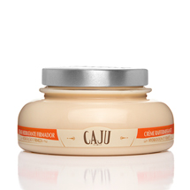

Sabonete massageador
Este sabonete de base vegetal limpa e massageia o corpo. Com partículas de Caju, ele ajuda a ativar a circulação da pele com a ação da massagem, preparando-a para receber o tratamento cosmético firmador.

Creme hidratante firmador
Este creme hidratante com extrato de Caju proporciona uma ação firmadora na pele imediatamente após a aplicação. A formula com efeito tensor deixa a pele visivelmente mais firme e resistente, além de mantê-la hidratada por 48 horas.